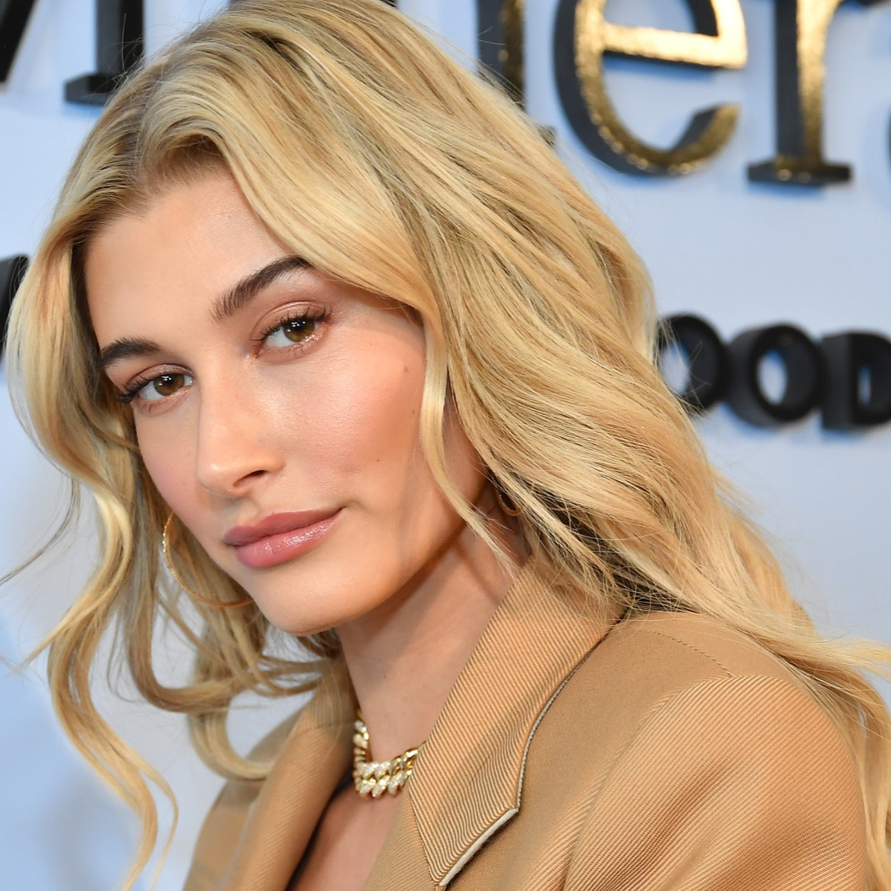

Хейлі Бібер Болдуін (англ. Hailey Bieber Baldwin) - американська топ-модель і телеведуча. Представниця знаменитої голлівудської династії і молодша дочка актора Стівена Болдуіна, а також дружина співака Джастіна Бібера. В травні 2017-го очолила список найкрасивіших жінок в світі, за версією журналу «Maxim», а в листопаді 2017 отримала титул «Найвпливовіша дівчина в світі стилю» на церемонії FN Achievement Awards 2017. З липня 2018 є креативним директором компанії «Adidas».

Кар'єру моделі дівчина почала в 2014 році. Першим модельним агентством, з яким почала співпрацювати Болдуін, стало «Ford Models». Хейлі почала зніматися для таких журналів, як «Tatler», «LOVE», «V and 'i-D» і брала участь в зйомках для зимового сезону бренду одягу «French Connection». У жовтні 2014 року Хейлі дебютувала на подіумі для показів Topshop і французького модельєра Соні Рікель. У грудні 2014 року вона брала участь в фото-сесії для журналу «Love», і в зйомках короткометражного фільму, знятого фотографом Деніелом Джексоном і випущеним на офіційному Ютуб каналі журналу.
У січні 2015 року, Болдуін знялася для американського журналу Vogue, а в березні для Teen Vogue.В квітні 2015 го Хейлі вперше з'явилася на обкладинці - в журналі «Jalouse». У цьому ж місяці дівчина знялася для обкладинок голландського видання «L'Officiel» і американського видання журналу «Wonderland», а також фігурувала в редакційних матеріалах для «Miss Vogue» і журналу «W». У липні 2015 го Хейлі взяла участь в зйомках реклами для бренду «Ralph Lauren» разом з австралійським співаком Коді Сімпсоном, а в жовтні - брала участь в подіумних показах «Tommy Hilfiger» і «Philipp Plein».
У січні 2016 року Хейлі з'явилася в кампанії Ralph Lauren а також знялася для корейського видання журналу Vogue. У цей період вона також знімалася для журналу «Self» брала участь в зйомках реклами для бренду «H & M». У березні Болдуін підписала контракт з висококласним модельним агентством «IMG Models», з яким також співпрацюють її подруги сестри Хадід, а в травні з'явилася на обкладинці впливового видання «Marie Claire», який назвав Хейлі новим обличчям індустрії. У червні 2016- го Хейлі співпрацювала з компанією Moschino, разом з такими з супермоделями, як Шанель Іман, Мірандою Керр і Алессандра Амбросіо. У цьому ж місяці вона розпочала співпрацю з брендом «Guess». У тому ж 2016 році, модель брала участь в фото- і відеозйомках для кампанії «UGG», а також стала обличчям лімітованої колекції одягу від «Karl Lagerfeld», яка була доступна в Північній Америці під назвою 'Love From Paris'. Болдуін з'явилася в передових статтях літніх випусків журналів «Glamour Magazine» та італійського видання «Vogue». У вересні 2016- го Хейлі взяла участь в Нью-Йоркському тижні моди, де представила такі бренди як: «Tommy Hilfiger», «Prabal Gurung», «Jeremy Scott», «Tory Burch» і «Matty Bovan». Після закінчення американської тижні моди, Хейлі вирушила в Лондон, де провела вечірку, що передує Лондонський тиждень моди, і взяла участь в модному показі Джуліана Макдональда. Болдуін також брала участь в тижнях моди Мілана і Парижа, з'явившись на подіумі показів «Dolce & Gabbana» та «Elie Saab». З 2016-му Хейлі співпрацювала з брендом одягу «The Daily Edited», з яким вони створили спільну капсульну колекцію сумочок під назвою #theHAILEYedited, а пізніше вона оголосила про співпрацю з ще одним британським брендом - «Public Desire». Хейлі також заявила, що запускає власну колекцію засобів для макіяжу, виробництвом якої займеться австралійський бренд «ModelCo». Влітку 2016- го Хейлі з'явилася на обкладинках таких журналів як ES Magazine. У листопаді, Болдуін прикрасила обкладинку австралійського випуску Harper's Bazaar і взяла участь у фотосесії для передової статті французького Elle. У грудні модель з'явилася на обкладинці журналу Gritty Pretty Magazine.
У січні 2017 го, дівчина знялася для обкладинки іспанського видання «Harper's Bazaar», разом з манекенником Джоном Кортахареном, а також прикрасила собою зимовий випуск журналу "Wonderland" Harper's Bazaar », взявши участь в досить відвертій фотосесії. У лютому модель взяла участь у показі весняної колекції «Tommy Hilfiger», в Каліфорнії, а також з'явилася на обкладинці австрійського видання журналу «Woman Magazine» ,а в квітні, на обкладинці малайзійського видання журналу «Cleo» . у травні 2017 го Болдуін очолила список «100 найкрасивіших жінок в світі», за версією журналу «Maxim», і з'явилася на обкладинці червневого випуску. Хейлі також прикрасила собою відразу три обкладинки журналу Elle, ставши особою американського, британського і японського видань. У липні вона з'явилася на обкладинці журналу «Jolie Magazine», взяла участь у фотосесії фешн-фотографів Братів Мореллі для японського видання журналу «Vogue», а в серпні знову знялася для «Maxim», і прикрасила мексиканське видання журналу. у вересні 2017 Хейлі почала співпрацювати з «Adidas» і «JD Sports», і виступила в якості стиліста і творця колекції присвяченій вуличного стилю, яка була предст авлена на Лондонському тижні моди. У жовтні Хейлі з'явилася на обкладинці іспанського видання журналу «S Moda Magazine», а в листопаді отримала титул «Найвпливовіша дівчина в світі стилю» на церемонії FN Achievement Awards 2017. У грудні дівчина знову знялася для Maxim з'явившись на обкладинці індійського видання журналу.
У березні 2018 року став обличчям бренду одягу "Zadig & Voltaire" представивши колекцію весна-літо 2018. У липні 2018 Хейлі, яка протягом багатьох років була обличчям «Adidas», розширила свою роль у співпраці з компанією, і стала першою в історії, отримала посаду - Творця стилю і Креативного директора компанії. У серпні, в дуеті з Вінні Харлоу дівчата були названі будинком Tommy Hilfiger новими іконами стилю, і представили капсульну колекцію бренду - Tommy Icons. У вересні Хейлі з'явилася на обкладинці іспанського видання «Vogue», вперше офіційно показавши помолвочноє кільце, подароване Джастіном Бібером, і розповівши в інтерв'ю журналу, історію їхнього кохання.